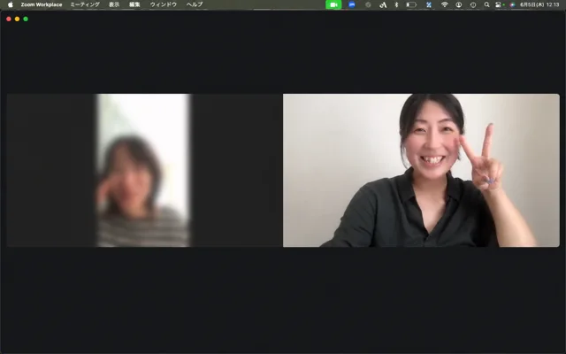

人間を知る、そのおもしろさへ。
全12回 / 6ヶ月 / ONLINE
人って、
わからない。だから、
おもしろい。
自分なら気にならないことを、
ずっと気にしている人がいる。
自分なら選ばないことを、
迷わず選ぶ人がいる。
同じ言葉を聞いても、
うれしい人もいれば、傷つく人もいる。
同じ出来事の中にいても、
人によって、見えている世界はけっこう違う。
エニアグラムを手がかりに、
9つのタイプと、
その奥にあるものを知っていく。
自分のタイプを知って、終わりじゃない。
人を見ることが、
どんどん面白くなる6ヶ月。
全12回のエニアグラム講座です。
01 / 日常の「なんで？」
自分と違う。その先が、おもしろい。
なんで、そんなに
ちゃんとしたいんだろう。
なんで、そこまで
人のことを気にするんだろう。
なんで、そんなに
はっきり言えるんだろう。
なんで、嫌なのに断らないんだろう。
なんで、急に
ひとりになりたくなるんだろう。
自分と違う。
その先が、おもしろい。
02 / 同じ行動、違う理由
同じ「断れない」にも、
いろんな理由がある。
たとえば。
こんな可能性があるかもしれません。
頼まれると断れない
でも、理由はひとつじゃない
- 嫌われたくない
のかもしれない - 困っている人を
放っておけないのかもしれない - 期待に応えたい
のかもしれない - 波風を立てたくない
のかもしれない - 自分がやったほうが早い
と思っているのかもしれない
見ていくのは、「何をしたか」だけではなく、
「なぜ、そうするのか」。
03 / 9タイプというレンズ
9タイプに、
人を当てはめる。
……ためじゃない。
9タイプを使って、人を決めつけるのではありません。
「もしかしたら、この人には
こう見えているのかもしれない」
そう考えられる可能性を、増やしていく。
9タイプを知った自分の目で、
もう一度、人を見る。
04 / 自分を知る、その先へ
自分のタイプを
学ぶ回は、
1回。
でも、
この講座はそこで終わりません。
残りの8タイプを知る。
そして、目の前の人を
どう見ていくのかを学ぶ。
自分を知るためだけのエニアグラムから、
人をもっと知りたくなるエニアグラムへ。
05 / 観察するということ
人を当てるんじゃない。
人を、もっと見る。
言葉、反応、ふと見せるこだわり。
すぐに答えを出さずに、立ち止まる。
最初の見立てが変わってもいい。
別の可能性を持ちながら、また見る。
- 見る
- 気になる
- 仮説を持つ
- 別の可能性も考える
- また見る
人を見る解像度を、上げていく。
OBSERVATION NOTES / 人を見るレイヤー
一歩、
その奥へ。
目に映るものから、
まだ見えていないものへ。
行動
言葉・反応・こだわり
何を大切にしている？
何を怖れている？
何を守ろうとしている？
見えているものだけが、
その人じゃない。
06 / 6ヶ月かけて学ぶ理由
一覧表を覚えるだけなら、
6ヶ月もいりません。
9タイプの特徴だけなら、
本やWebでも調べられます。
でも、実際の人間はもっと複雑。
同じタイプでも違う。
同じ行動でも理由が違う。
最初の見立てが変わることもある。
講座で知ったことを、日常で見てみる。
気づいたことを、次の講座へ持ち帰る。
その往復を、半年かけて重ねていきます。
- 講座
- 日常
- 気づき
- 次の講座
- また、日常へ
知る。見る。考える。
07 / 日常が人間観察になる
講座が終わってからも、
エニアグラムが始まる。
家族の何気ないひと言。
友達の選び方。仕事でのやりとり。
ドラマの登場人物が、大切にしているもの。
同じ毎日にも、考えてみたいことが増えていく。
日常が、ちょっとした
人間観察の時間になっていく。
08 / そして、自分へ
人を知っていたはずなのに、
自分が見えてきた。
「これは、みんなにとって
当たり前ではなかったんだ」
他の8タイプを知ることで、
自分が大切にしてきたものにも気づいていく。
人との違いを通して、
自分のことも知っていく。
09 / この講座が大切にしていること
いろんな人がいる。
だから、人間はおもしろい。
「意味わからない」
「そういう世界を
見ているのかもしれない」
人を分類するための知識ではなく、
人を知ろうとするための視点。
10 / 講師 さっちゃん
人を見ることが、
ずっと好きでした。
何を考えているんだろう。
どうして、それが大切なんだろう。
人間観察が好きで、人について考えることが好き。
そんな好奇心から、一緒に学んでいきたいと思っています。
公認心理師
心の相談室「あんだんて」店主
元教員。筑波大学大学院で応用行動分析を研究。2022年に心の相談室「あんだんて」を開業。エニアグラムと四柱推命を通して、人について考える時間を届けています。
FREE LESSON / 無料体験講座
まずは動画で、
講座の雰囲気に触れてみる。
お申し込みの前に、
無料体験講座をご覧いただけます。
動画は準備中です。
公開後、ここでご覧いただけます。VOICES / これまでの学びから
受講生の声
相手が愛おしくなりました
ずっと学びたかったエニアグラムを学んで、ますます周りにいるひとや関わってる人のタイプを知りたくなって理解したいと思うようになりました。相手の本質を知り愛おしくなったり、自分の捉え方も変わったり。自分自身が一番自分の事を理解してあげれてなかった事の氣づきもありました。
いろんな角度から教えてくれる
さっちゃんは、お客様に寄り添うのが上手！芸能人とかわかりやすいひとだしてくれたり、いろんな角度からその人を教えてくれる。マンツーマンだと私もいいたいことがいえる。身近な人こうかなーとか話したいこと聞いてくれるのありがたい。いろんな人がいるからこそ、私のよさや、周りの人の考えをいつもより俯瞰してみれるようになる。エニアって深くて面白い🥰
これまで学んでくださった方のお仕事（一部）
- 書道家・書道教室講師
- 保育士
- 幼稚園教諭
- 女優
- 病院薬剤師
- 主婦
- 助産師
- 心理カウンセラー
- 料理教室講師
- Webデザイナー
11 / 講座概要
半年間の、
学びのかたち。
人を見るエニアグラム
2026年10月〜2027年3月
- 期間・回数
- 6ヶ月 / 全12回月2回・1回120〜150分
- 開催形式
- オンライン（Zoom）
- 初回
- 2026年10月15日（木）
21:00スタート第2回以降の日時は、申込時のアンケートをもとに決定し、第1回でお知らせします。
講座で扱うこと
- エニアグラムの基本と9つのタイプ
- 自分のタイプを深く知り、自分以外の8タイプを知る
- 人の言葉・反応・行動を見る
- その奥にある価値観・怖れ・欲求・動機を考える
- 実際の人物を観察する視点と、タイプを見立てていく考え方
SUPPORT / 講座と日常をつなぐ
学びは、講座の時間の外にも。
Discordで、
問いを持ち寄る。
講座後に出てきた疑問や、人を観察して気になったことを質問できます。
さっちゃんコラム
タイプの追加解説や、講座だけでは伝えきれない特徴、人を見るときのポイントを発信します。
SNSアカウントの紹介
タイプの特徴が見えやすいアカウントなどを、人間観察の参考として紹介します。
※紹介する人物・アカウントのタイプを断定するものではありません。
先輩受講生との交流
ほかの人の「見かた」に触れることも、学びのひとつ。これまで学んできた先輩受講生とも交流できます。
録画で、
もう一度見る。
各回の録画は、Discord内のアーカイブ専用ルームで共有します。
- 通常の視聴期限
- 2027年9月末まで
- その後の視聴
- 月額1,980円（税込）のコミュニティを継続している期間中は、引き続きアーカイブを視聴できます。
自分の話をする、
個別の時間。
60分 × 2回
利用期限：2027年3月31日まで
相談テーマは基本的に自由。自分、家族、パートナー、人間関係、今の悩みなど、エニアグラムに限らずお話しいただけます。希望があれば四柱推命鑑定も可能です。

TEXTBOOK
学びを手元に。
講座テキストはPDFでお渡しします。
ご希望の方には冊子でもご用意します。
DIPLOMA
半年間の学びのしるし。
全12回を修了された方には、
ディプロマをお渡しします。
講座の修了を示すもので、資格・認定・公的証明ではありません。
受講料 / 全12回
お支払い方法
銀行振込
150,000円（税込）
一括払いのみ
クレジットカード / PayPal
165,000円（税込）
最大6回まで分割可能
分割手数料なし
クレジットカードのお支払いにはPayPalを利用します。
全12回セットでのご提供です。お支払い・キャンセル条件は特定商取引法に基づく表記をご確認ください。
申込フォームに移動します。
12 / こんな人と、一緒に
「人って、おもしろいな」
と思える人。
- 人間観察が好き
- エニアグラムをもっと深く知りたい
- 自分のタイプだけで終わるのは物足りない
- 家族やパートナーをもっと知りたい
- 「なんで？」と思う人がいる
- 考え方の違いそのものがおもしろい
- 実際の人物について考えてみたい
FAQ / よくあるご質問
気になっていること。
自分のタイプがわからなくても参加できますか？
はい。第1回はエニアグラム全体のお話です。タイプが決まっている前提では始まりません。ご自身のことは個別セッションでも扱えます。
参加できない回があったら？
全回の録画をDiscord内のアーカイブ専用ルームで共有します。通常は2027年9月末まで視聴でき、その後も月額1,980円（税込）のコミュニティを継続している間は視聴できます。
第2回以降の日時はどう決まりますか？
お申し込み時のアンケートで参加しやすい時間帯をうかがい、平日午前・平日午後・平日夜・土曜午前・土曜午後のなかから決定します。決まった日程は第1回でお知らせします。
気になるタイプの回だけ受けられますか？
全12回セットでのご提供です。単発受講はありません。
ディプロマは資格や認定ですか？
資格・認定・公的証明ではありません。この講座を全12回修了された方にお渡しする、学びのしるしです。
キャンセル・返金はできますか？
第1回の前日（2026年10月14日）までにご連絡いただければ全額返金します。第1回の開始後は、お客様のご都合による返金はいたしかねます。詳しくは特定商取引法に基づく表記をご確認ください。